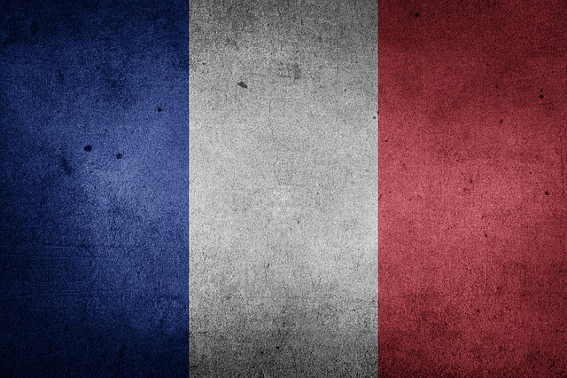

Republika Francuska 
Francja kojarzy się z najlepszym szampanem, rozrywką, winem i świetną kuchnią, a przede wszystkim z Paryżem - miastem zakochanych i artystów. Francja to kraj kontrastów i niezapomnianych wrażeń. Ma do zaoferowania turystom historyczne miasta, wspaniałe krajobrazy, najwyższe góry i najpiękniejsze plaże w Europie, zamki nad Loarą, winnice Szampanii, największy w Europie Disneyland... i wiele innych atrakcji.
raj składa się z 96 departamentów w 22 regionach administracyjnych, z których każdy charakteryzuje się odmiennym krajobrazem. Wybrzeże o długości 5 tys. km rozciąga się od dzikiego i kamienistego Breton na północy, po piaszczyste plaże Wybrzeża Środziemnomorskiego na południu. W dolinie najdłuższej rzeki Francji, Loary (1020 km), wznosi się ok. 300 malowniczych zamków. To właśnie tu, w Alpach Sabudzkich - raju narciarzy, wznosi się Mont Blanc (4807 m n.p.m.) - najwyższy szczyt Europy.
O kraju
- STOLICA:
- Paryż
- POWIERZCHNIA:
- 675 417 km²
- LUDNOŚĆ:
- 63 753 140
- JĘZYK:
- francuski
- WALUTA:
- euro (EUR)
Najciekawsze miejsca:

Paryż - każdy powinien odwiedzić to miasto. Obejrzeć największe zabytki, powłóczyć się po krętych uliczkach, wjechać na szczyt Wieży Eiffla, zasiąść w kafejce na Montmartre. Jednych miasto oczarowuje, inni twierdzą, że jest przereklamowane. Z pewnością warto jednak tu przyjechać i wyrobić sobie własne zdanie. Nie ma wątpliwości, że to wyjątkowe miasto - stolica Francji, ale w pewnym sensie także stolica świata. W Paryżu spotykają się bowiem turyści ze wszystkich zakątków kuli ziemskiej.
Mont Saint Michel to niezwykłe opactwo i miasteczko w Normandii, jedna z największych atrakcji Francji, rocznie odwiedzana przez 3 miliony turystów. Mont Saint Michel, czyli Wzgórze Świętego Michała znajduje się prawie 2 km od stałego lądu. Przy dużych przypływach występujących 53 razy w roku Mont Saint Michel jest zalewane. Z kontynentalną Francją miasteczko łączy wówczas jedynie wąska grobla długości 1800 metrów. Zbliżająca się fala jest ogłaszana zawczasu przez bicie dzwonów na szczycie.
Strasburg to stolica Alzacji, stolica pogranicza - miasto, które przez wieki było kością niezgody między wielkimi sąsiadami Francją i Niemcami. Miasto łączy w sobie najlepsze cechy obu nacji. Dziś jest symbolem zjednoczenia Europy i jednocześnie jednym z najbardziej malowniczych miast Francji. Mają tu siedzibę m.in. Rada Europy i Parlament Europejski. Ale nie to przyciąga do Strasburga turystów. Magnesem jest Grande Ile, czyli Wielka Wyspa otoczona wodami rzeki Ill. Na wyspie znajduje się serce Strasburga, urocze stare miasto, romantyczne uliczki z oknami pełnymi pelargonii.